首旅高端品牌酒店包括：
首旅酒店子公司诺金酒店（持股50%）与凯宾斯基合资公司北京凯燕管理运营的奢华五星品牌诺金。
首旅酒店（持股40%）与吉合睦、北京凯风启明合资公司安麓（北京）管理运营的精品五星品牌安麓。
首旅酒店子公司首旅建国旗下四星到五星档次酒店品牌首旅建国、建国熹上、建国铂萃。
首旅酒店子公司首旅京伦旗下三星到四星档次酒店品牌首旅京伦。
首旅酒店子公司宁波南苑旗下四星到五星档次酒店品牌首旅南苑。
首旅子公司海南南山文旅旗下四星档次酒店品牌南山休闲会馆。
不含北京凯燕管理运营的国内21家凯宾斯基酒店（其中1家业主为首旅集团）和北京环球影城大酒店。
不含首旅集团旗下尚未划归首旅酒店集团的酒店，包括北京颐和安缦、北京宝格丽、北京长富宫饭店、北京饭店、北京长城饭店、北京贵宾楼饭店、北京新世纪饭店、北京亮马河大厦、北京龙湾国际露营公园、北京诺富特和平宾馆等。
截至2023年12月31日，首旅旗下高端品牌酒店诺金3家、安麓3家、首旅建国68家、首旅京伦12家、首旅南苑19家、南山会馆1家、建国铂萃6家，共计112家。
2023年首旅建国品牌有4家新开业加盟酒店，但退出的更多，2023年相比2022年净减少3家。首旅建国国外白俄罗斯明斯克市1家酒店，渭南建国饭店包括渭南建国饭店B座。
安麓、诺金都未上线首旅酒店官方平台（首旅如家、首享会）；
首旅建国多家酒店、首旅南苑多家酒店也都未上线首旅酒店官方平台；
部分首旅建国/首旅京伦/首旅南苑酒店只上线首旅如家平台未上线首享会平台，部分首旅建国/首旅京伦/首旅南苑酒店只上线首享会平台未上线首旅如家平台，首旅如家平台与首享会平台都有多家酒店所有日期都不能预订；
南山休闲会馆只上线首旅如家平台且所有日期都不能预订。
目前首旅高端品牌酒店在北京、上海、天津、重庆、河北、山西、河南、辽宁、吉林、内蒙古、江苏、山东、浙江、福建、湖北、湖南、广东、江西、四川、贵州、海南、陕西、甘肃、新疆有酒店。
开业：新酒店开业或是其它酒店翻牌开业时间；客房：客房数量。
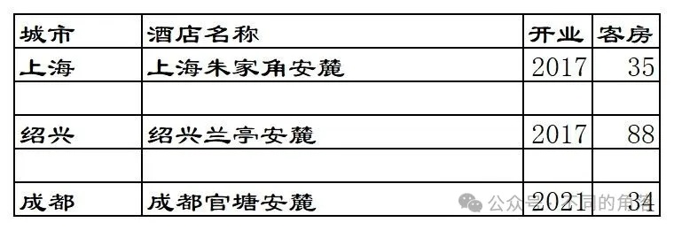
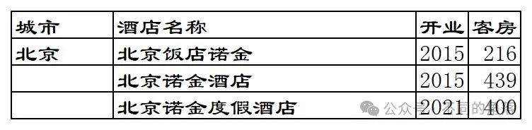
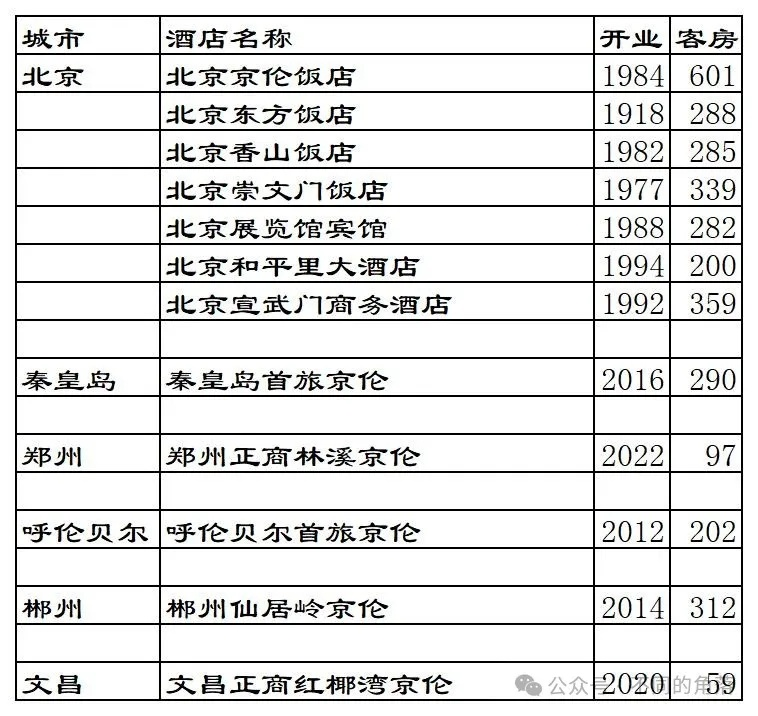
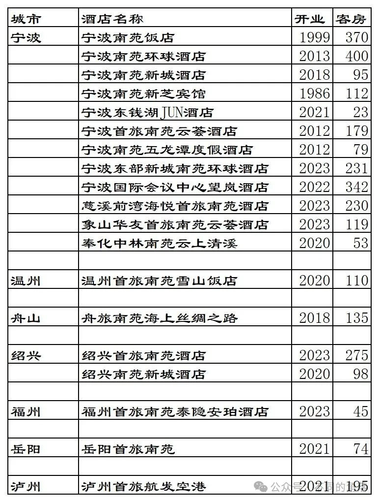
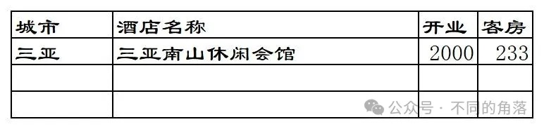
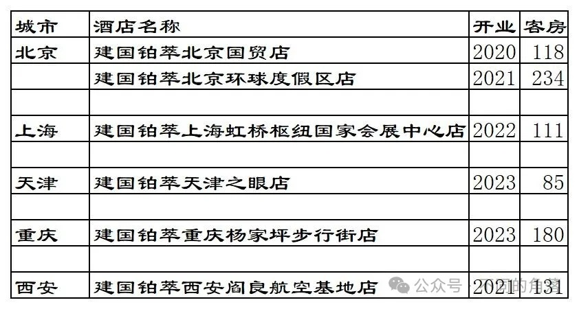
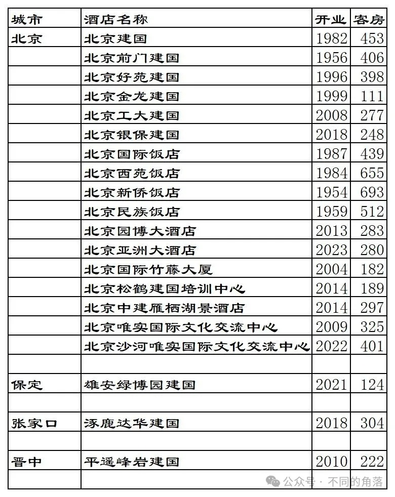
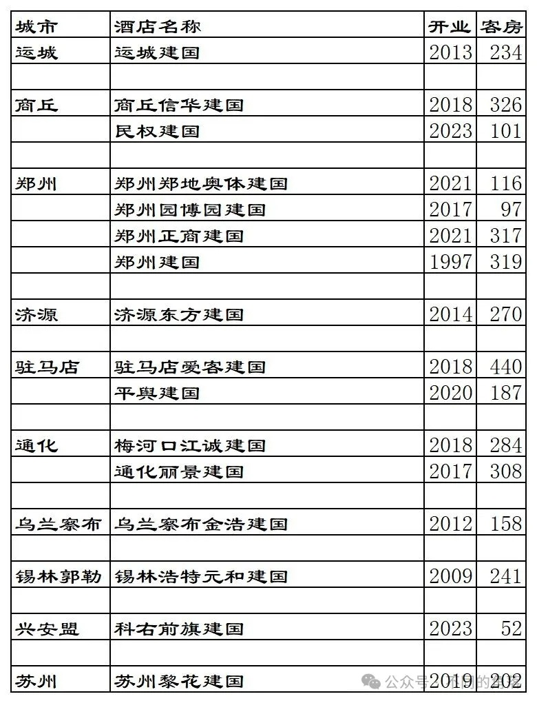
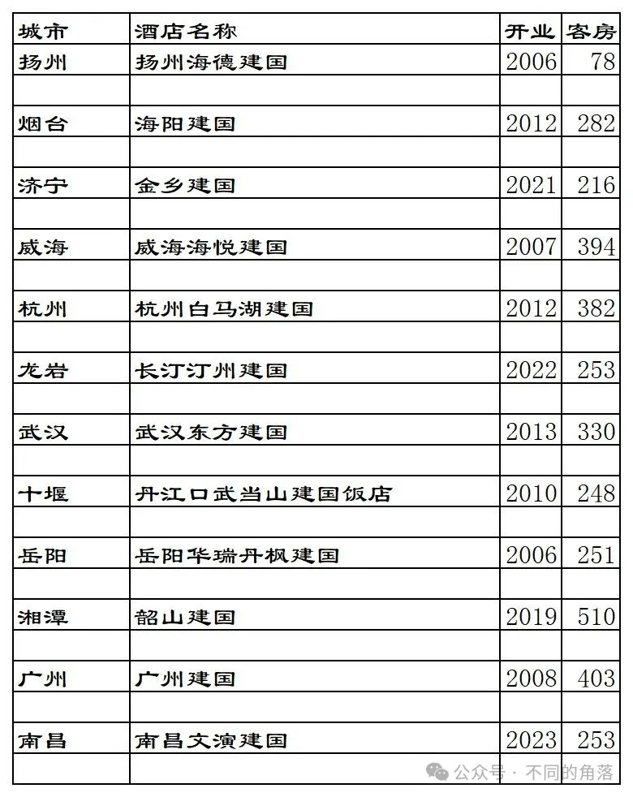
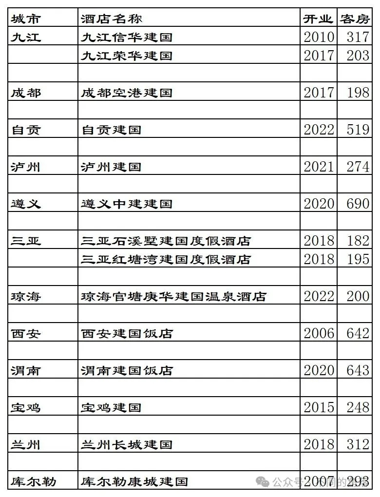
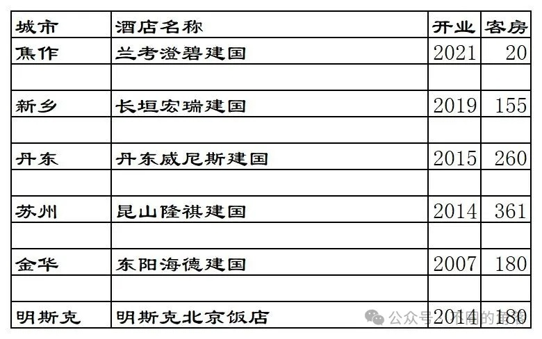